micaO
Nome: Micael Rodrigues
Data de Nascimento: 5 de Setembro de 1996
Rota: Atirador
Campeões Favoritos:
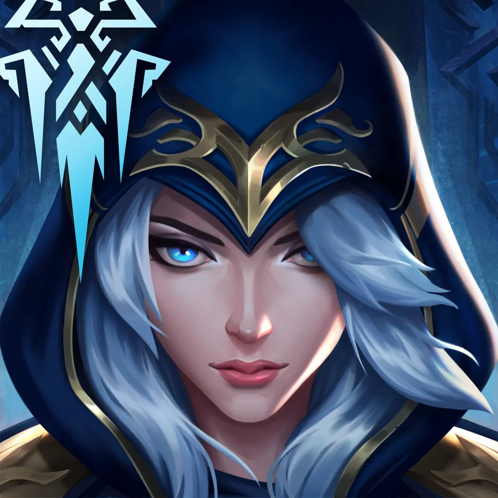
 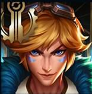
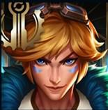
Baseada nos jogadores da Team United, que receberam uma proposta de Rogério Formiga, a equipe começou a tomar forma com Thiago
"Djokovic" Maia,Micael "micaO"
Rodrigues e Luan "Jockster" Cardoso. Felipe
"Yang" Zhao, vindo da AceZone E-sports, foi a primeira escolha para a rota superior, convidado pessoalmente por Micao.
A busca pelo mid-laner foi um desafio. “Shinigami”, preferido pelos jogadores, enfrentava uma cirurgia iminente que o impediria de
se juntar à equipe. Gustavo “Minerva”, a segunda opção, passou por testes, mas Djokovic percebeu uma certa “má vontade” no jogador.
Foi então que Yang trouxe Gabriel "Tockers" Claumann, um velho conhecido da AceZone.
A necessidade de um novo jungler era evidente. Os donos da INTZ, confiando na sabedoria de Djokovic, perguntaram quem poderia ser o
substituto ideal. Ele nomeou Gabriel "Revolta" Henud , que, apesar de uma fase difícil
na carreira, era um nome de peso e a referência que faltava. Rogério e Lucas já estavam em conversas avançadas Revolta, que fechou acordo
com a organização e se juntou à equipe.
Djokovic continuou a jogar por mais dois campeonatos pela organização, enquanto Revolta, já integrado ao time, assistia aos treinos.
E assim nasceu a lendária line-up conhecida como "Exodia", a melhor line-up da história do CBLOL.
Nome: Micael Rodrigues
Data de Nascimento: 5 de Setembro de 1996
Rota: Atirador
Campeões Favoritos:
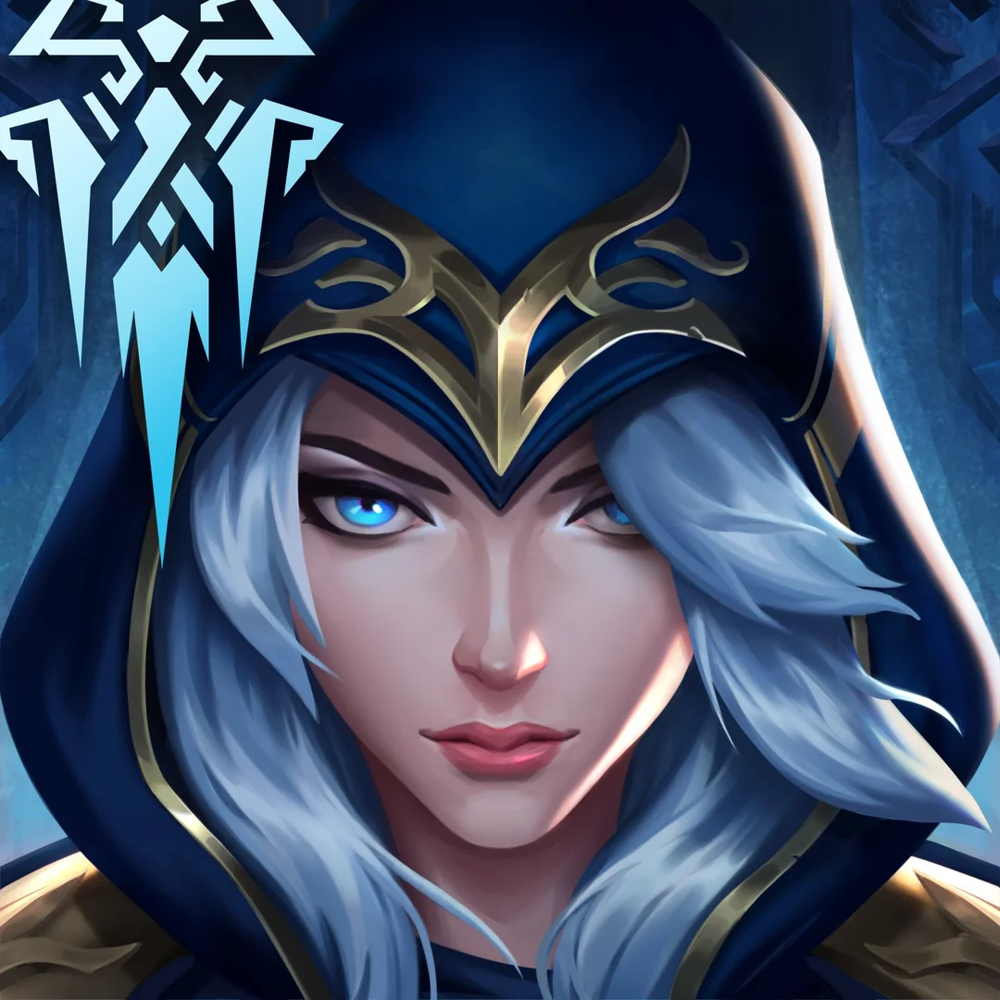
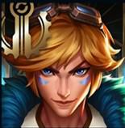
Nome: Luan Cardoso
Data de Nascimento: 18 de Fevereiro de 1996
Rota: Suporte
Campeões Favoritos:
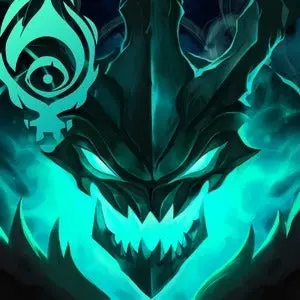


Nome: Felipe Zhao
Data de Nascimento: 14 de Abril de 1996
Rota: Topo
Campeões Favoritos:
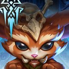
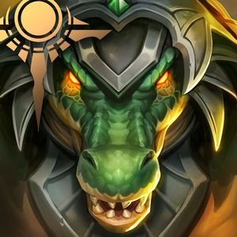

Nome: Gabriel Claumann
Data de Nascimento: 21 de Agosto de 1996
Rota: Meio
Campeões Favoritos: 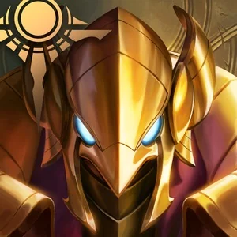 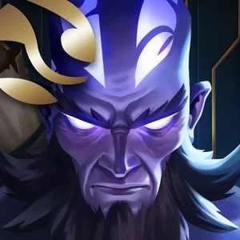 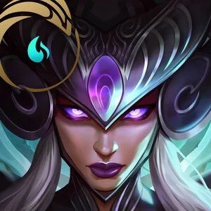
Nome: Gabriel Henud Cresci
Data de Nascimento: 27 de Dezembro de 1995
Rota: Caçador
Campeões Favoritos:
 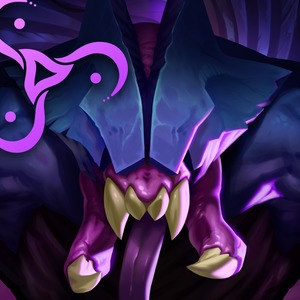
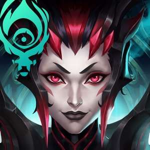
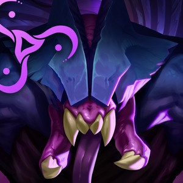
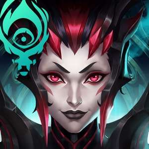
Texto a ser produzido.
Texto a ser produzido.
Texto a ser produzido.
Texto a ser produzido.
Texto a ser produzido.